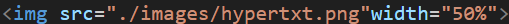

gitでは以下のことができる
- 古いバージョンを簡単に戻せる
- 複数人で変更の共有ができる
- 新旧のファイルを一元管理できる
- ほかの人が修正した部分を一つに結合できる
リポジトリについて
リポジトリとは、ファイルやプログラム、設定情報などの保管場所である。
その中でもgitで使われるリポジトリは、ファイルや変更履歴とかを置いておくところである。
その中でもgitで使われるリポジトリは、ファイルや変更履歴とかを置いておくところである。
外部サイト引用
htmlについて
htmlとは「HyperText Markup Language」の略称である。簡単に言えば、テキストを超えるとあるとおりすごい文書である。
つまり、機能を付け加えてその機能をもった文字や画像を作ることができるのである。
以下のような機能がある
このページを作るため下のようにした
つまり、機能を付け加えてその機能をもった文字や画像を作ることができるのである。
以下のような機能がある
- 見出しタグ h＋数字 数字が小さいほど大きい
- 文字の表示 div
- 画像の表示 img src="./や../で画像を選べる"また、widthで大きさの指定ができる
 - リンクの貼り付け a href="">ここからとべる（ここにimg～を使えば画像からとべる）
- リストの表示 ol/ul li

このページを作るため下のようにした